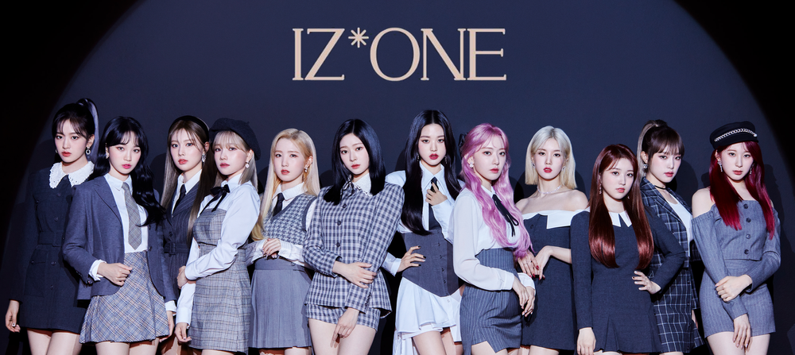
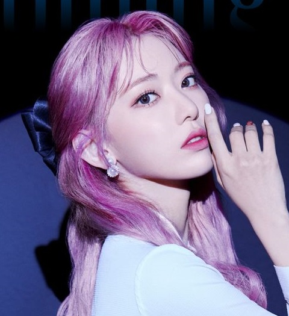

IZ*ONE(アイズワン)
アイズワンは韓国の12人組ガールズグループ。
メンバー

クォンウンビ
1995/09/27
ポジションはリーダーとメインダンサー、リードボーカル。
宮脇咲良
1998/03/19
ポジションはサブボーカルとサブラッパー。
カンヘウォン
1999/07/05
ポジションはリードラッパーとサブボーカル。

チェイェナ
1999/09/29
ポジションはリードボーカルとリードダンサー、ラッパー。

イチェヨン
2000/01/11
ポジションはメインダンサーとリードボーカル、サブラッパー。
キムチェウォン
2000/08/01
ポジションはリードボーカル。
キムミンジュ
2001/02/05
ポジションはサブボーカルとサブラッパー。
矢吹奈子
2001/06/18
ポジションはサブボーカル。

本田仁美
2001/10/06
ポジションはサブボーカル。

チョユリ
2001/10/22
ポジションはメインボーカル。
アンユジン
2003/09/01
ポジションはリードボーカルとリードダンサー。
チャンウォニョン
2004/08/31
ポジションはセンターとサブボーカル、サブラッパー。